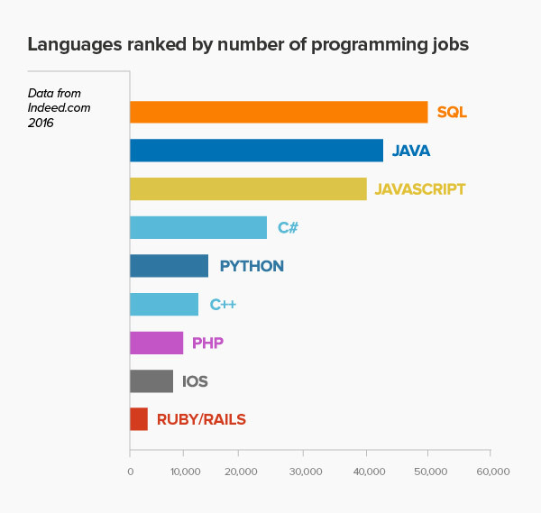

Лучшие языки программирования
Языки программирования
Начать стоит с того, что популярность языков программирования — понятие весьма субъективное. Для объективного анализа банально не хватает данных.
Просто невозможно отследить даже примерное количество программистов, которые начали учить конкретный язык, или отдельных проектов, в которых он используется.
В основном для расчёта популярности ЯП используют данные поисковой выдачи крупных поисковиков. Но даже при единых исходных данных результаты аналитики иногда различаются кардинально.
| Топ языки | Редакторы | |
|---|---|---|
| Python | Java | Visual Studio, Atom, PyCharm, Sublime |
| C++ | C# | |
© Нгуен Джон Майкл